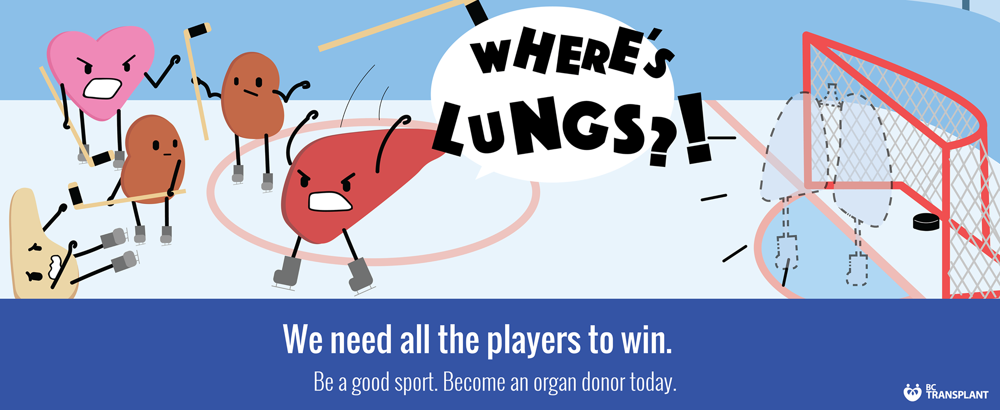
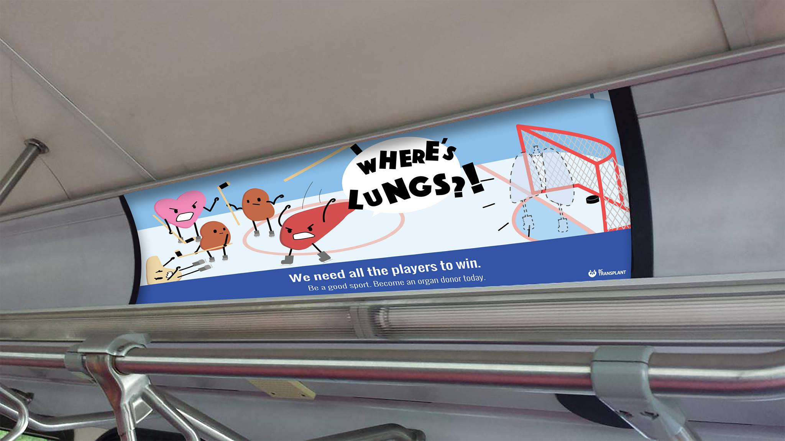

Where Are They?!
In Collaboration with Serena Trinh, Maddy Hicks, and Licia Freire



OBJECTIVE
To create a social marketing campaign based on a local or topic of choice. Applications include direct mail pieces and advertisements.
PROGRAM USED
Adobe Illustrator, Photoshop
OUTCOME
Our goal for this campaign was to encourage people to sign up to be part of the organ donation registry, and inform them about organ donation. As the topic of organ donation can be both sensitive and controversial, we decided on a playful approach. By using organs rendered as cartoon characters, we are able to attract a younger audience. All of these organs are put into relatable team building situations and face problems when one member is not present or doesn’t work. We also included captions that are both funny, clever and straightforward for the need for donors.